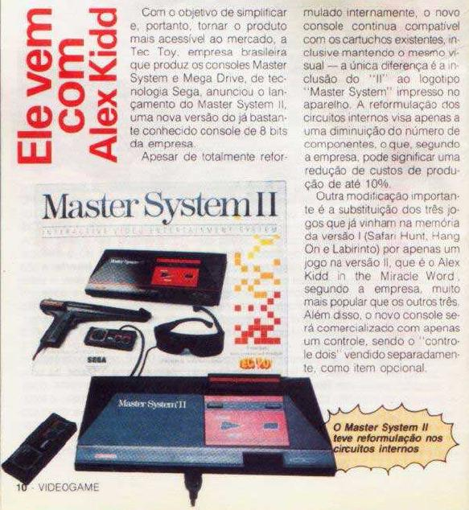

Vem aí o Master System 2!!!
 :::. Por Gigacom
:::. Por Gigacom
Bem no inicio dos anos 90, a Tec Toy
já havia consolidado a sua presença no mercado de video
games do Brasil. E olha que ela marcou presença meeeeeesmo!
Depois que a TT resolveu fabricar aqui os consoles da SEGA, a
importação de consoles via Miami diminuiu bastante, a
SEGA ficou conhecida por essas bandas, e muito moleque pedia um Mega
Drive no natal e acabava ganhando um Master System (que era mais barato ). Mas
não é bem sobre isso que iremos falar, e sim da novidade
que era o Master System 2. Cabe aqui uma boa questão: qual a
diferença entre o Master System 1 e o 2? Seriam apenas a
mudança do joguinho que vinha na memória? Podemos dizer
que é isso e mais algumas pequenas coisitas.
). Mas
não é bem sobre isso que iremos falar, e sim da novidade
que era o Master System 2. Cabe aqui uma boa questão: qual a
diferença entre o Master System 1 e o 2? Seriam apenas a
mudança do joguinho que vinha na memória? Podemos dizer
que é isso e mais algumas pequenas coisitas.
O Master System 2 internamente é
um pouco diferente do Master 1. Ele possui menos componentes instalados
na placa mãe do console, além da caixa onde vem
apenas
um controle ao invés de 2. A fonte tambem é diferente. E
por que tudo isso? Simples, redução de custos. Em todos
os consoles da SEGA (com a sumária exessão do Game Gear e
Nomad), houve uma reformulação dos componentes internos a
fim de diminuir os custos de produção do projeto final
dos consoles, tendo consequência direta no barateamento do video
game. No caso do Master, o custo teve uma
diminuição sensível, mas nada do tipo "puxa vida,
como ficou barato agora ", mas diminuiu. Enfim, vejam abaixo um scan de um revista
da época:
", mas diminuiu. Enfim, vejam abaixo um scan de um revista
da época:

Acesse o Trombone e comente sobre essa matéria!


O Game Boy vendia muito bem, e muitos jogos eram lançados para ele todos os meses, mas não tinha ainda uma tela colorida como a de seu principal concorrente...
Mega Drive e jogos argentinos